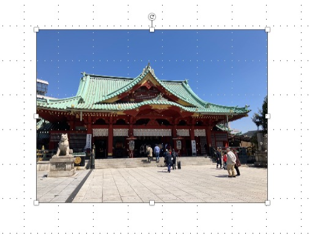
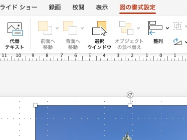
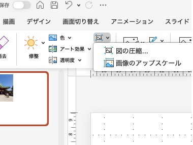
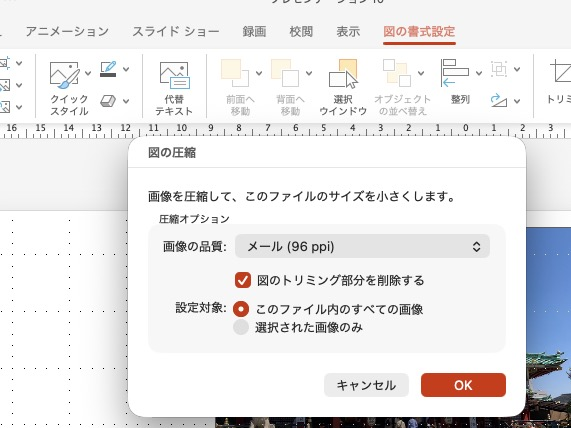
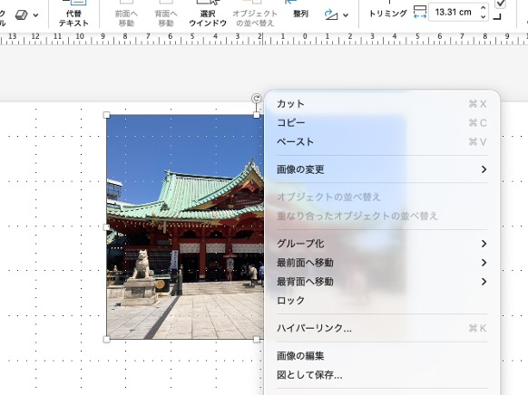

画像を圧縮するソフトにはいろいろなものがあります。
私がよく使っている（いた）のは、吉田製作所さんの縮小革命。
本人の談によると、氏が卒論に乗せる画像を処理する目的で作ったとか。
しかし、これはwindows用のソフト。
Macに乗り換えてからは、代替できるソフトを見つけることができず、
また、オンラインツールを使うと言っても、個人情報とかが含まれている画像で使うのには抵抗がありました。
そこで、私が使っているのは、ワードやパワーポイントの機能を使って画像を圧縮する方法です。
Mac・Windows問わず、オフィスソフトが入っていさえすれば、新たにソフトを導入したり、
オンラインツールを使わなくても画像を圧縮することができます。
友人に方法を聞かれたこともあり、この機会に方法を説明してみようと思います。どなたかの参考になれば幸いです
※ただし、この方法では、画像の品質が330ppi（HD）、220ppi（印刷）、150ppi（画面表示）、96ppi（メール）からしか
選ぶことができず、任意のものを設定できません。
今回はパワポ（バージョンはMicrosoft365）で説明をします。操作感や順序は、ワードでも同じです。




